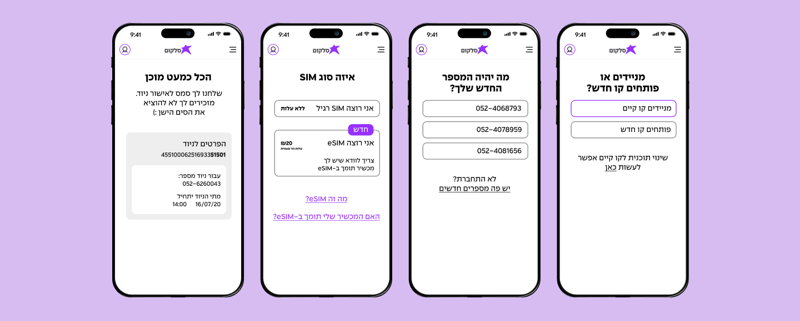
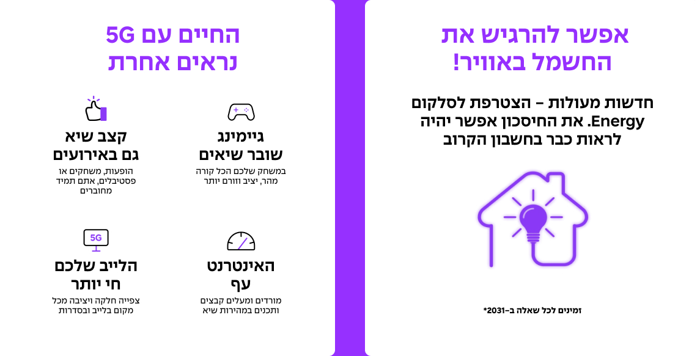
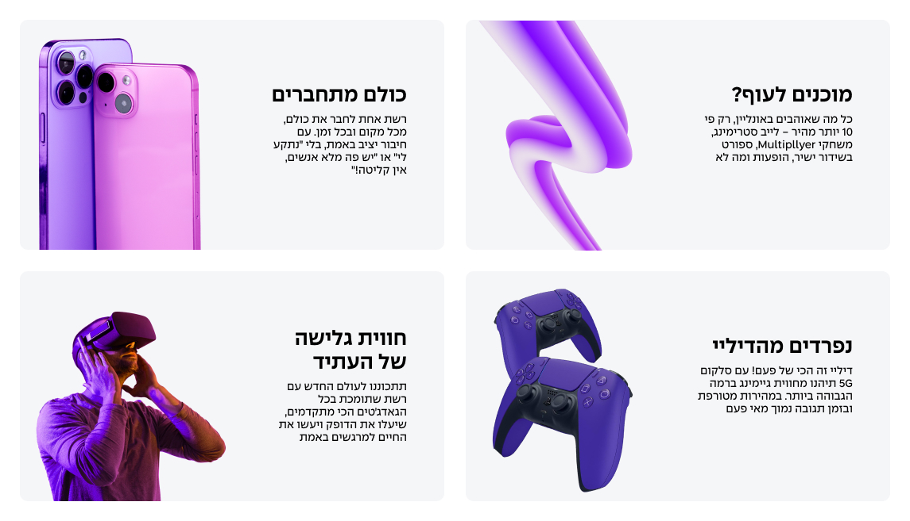

Cellcom
“Everything is possible” is the guiding principle behind Cellcom’s marketing strategy. A big idea :)
The challenge was to express it in the small, everyday words too. Working with Cellcom, we translated the brand strategy into a clear, approachable, confident voice - one that helps customers understand, choose, and get things done independently, weaving that promise into the user experience, customer journeys, and marketing materials
My role
I helped define Cellcom’s brand voice and persona and bring them to life through UX writing, microcopy, landing pages, website pages, and customer journeys. The new voice was a key part of the shift the brand wanted to make - and my role was to express that strategy through the words, tone, and approach across customer touchpoints

Same brand persona, different conversations
Like people, brands need to adapt to whoever they’re talking to. Cellcom’s voice was designed to stay recognizable while adjusting its tone to the audience, context, and stage of the journey. We defined what to say, how, and when - so whether someone is choosing a TV package for their home or a connectivity solution for their business, it feels like someone understands what matters and helps them move forward

